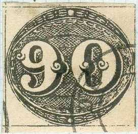
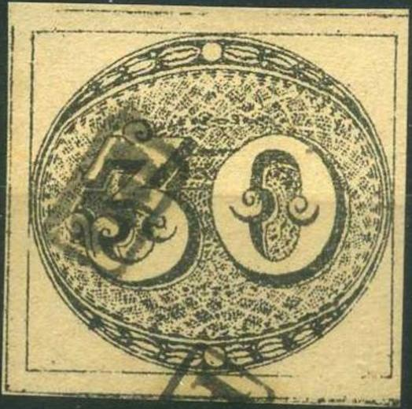
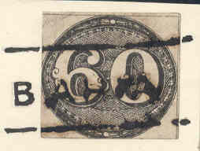
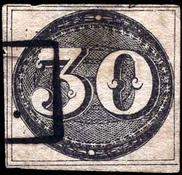

Genuine stamps
Return To Catalogue - Brazil 1843 issue - Brazil 1843 issue, forgeries part 2
Note: on my website many of the
pictures can not be seen! They are of course present in the
catalogue;
contact me if you want to purchase it.
Genuine stamps
Forgeries:
Forgeries of these stamps exist. There are 17 different kinds of forgeries known. Very old forgeries were made by Spiro in 1864, Zechmeyer made 3 different forgeries in 1890, followed by Erasmus Oneglia in 1897 and Giovani Patroni, also in 1897. In the 20th century forgeries were made by M.Mercier in 1910 (Mercier is the predecessor of the famous forger Fournier) and Jean de Sperati in 1914 (only the 60 r and 90 r). I'm not sure if the above date '1910' for Mercier is correct, since he went bankrupt in 1904 (source: Tyler, 'Philatelic Forgers, Their Lives and Works'). The other forgeries are of unkown makers (Source: http://www.firstissues.org/ficc/details/brazil_1.shtml). More information is also available at: http://www.philatoforge.co.uk/index.html.
In most forgeries the network of lines of the background is different from the genuine stamps. Examples:
Spiro forgeries:

(Reduced sizes)

There is a chain pattern around the inner shaded region in these Spiro forgeries. This pattern is not present in the genuine stamps. I've only seem them with the cancel "RIO DE JANEIRO" in circular cancel (no date).
Parts of sheets clearly showing the cancels on the Spiro
forgeries.
Full sheet of 25 Spiro forgeries.
These forgeries were described as early as 1864 in 'The Stamp Collectors Magazine' (1st October 1864); page 155. I presume they were only produced in sheets of 25 stamps (5 x 5). The cancels appear to be printed on the sheet.
Zechmeyer(?) forgeries:


Some of the Zechmeyer forgeries have a typical 'VF' cancel that can be found on forgeries of many other countries. On https://classiclatinamerica.com/wp-content/uploads/2021/01/Brazil-Forgeries_compressed_compressed.pdf this forgery type is classified as Zechmeyer's one, but I doubt that this information is correct.... By the way, another set of forgeries also exists with VF cancel.
Oneglia(?) forgeries:
In this forgery of the 90 r, the "9" and "0"
are touching each other, in the genuine stamps, there is a clear
space between them. I've also seen it with a cancel consisting of
parallel lines.
 


Forgeries of the 30 r and 60 r values with a variety of bogus
cancels, among them a French numeral "4507" cancel.
On
https://classiclatinamerica.com/wp-content/uploads/2021/01/Brazil-Forgeries_compressed_compressed.pdf
these forgeries are said to be made by Oneglia. But I don't think
this information is correct.
Also the book 'The Oneglia Engraved Forgeries by Robson Lowe
& Carl Walske (1996, 104 pages)' shows totally different
forgeries as Oneglia forgeries.
Patroni forgery:





According to the information on http://jfrubel.home.mindspring.com all three values were forged by Giovanni Patroni. They first appeared around 1897 and always(?) have the above "BAHIA" cancel. In the 30 r, the "3" and "0" are larger. Similar for the 90 r, where the "9" and "0" are larger. The side ornaments in the 60 r are smaller than in the genuine stamps.
{kind=link}